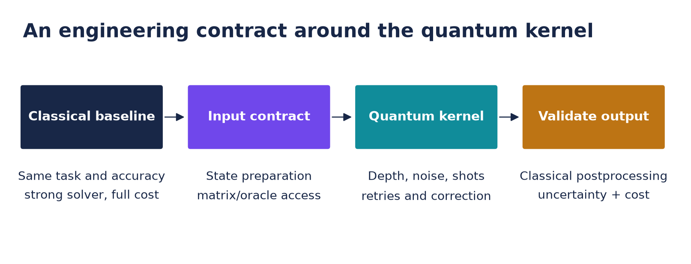
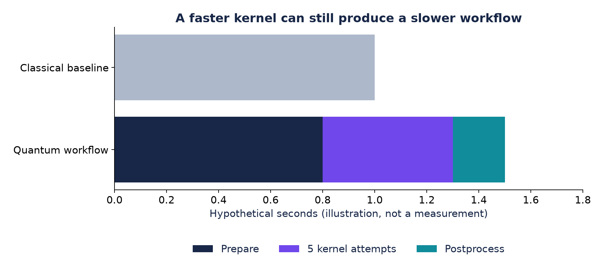

ในบทความนี้
In this post
Scorecard — สี่ algorithms แก้คนละโจทย์
บทที่ 7/7 · ดัดแปลงจากเอกสาร Quantum Algorithms for Programmers, Edition 1.0 หน้า 36–40 พร้อมโค้ดและคำอธิบายที่ตรวจซ้ำสำหรับเว็บ
หลังรันหกบทแรก เรามีวิธีอ่าน quantum algorithm เป็น software component: ระบุ input ที่เข้าถึงได้ operation ที่ทำได้ output ที่อ่าน และ cost model ที่นับ การพูดว่า “quantum เร็วกว่า” โดยไม่ระบุสี่อย่างนี้ยังไม่พอสำหรับ architecture decision
| Algorithm | Mathematical opportunity | Boundary to inspect | What our lab establishes |
|---|---|---|---|
| Grover | Θ(√N) oracle queries | reversible predicate และ per-query cost | amplification และ over-rotation ตรงทฤษฎี |
| Shor | polynomial ใน bit length | scalable arithmetic และ fault tolerance | period 4 → factors 3,5 สำหรับ 15 |
| HHL | dimension dependence ต่ำภายใต้เงื่อนไข | state preparation, κ, precision, readout | normalized solution state ของระบบ 2×2 |
| QAOA | parameterized heuristic | training, noise, classical solver | distribution ดีขึ้นบน graph หก vertices |
| Simulation | quantum dynamics ที่มีโครงสร้าง | observable, preparation, error budget | product formula converge บนสอง qubits |
ไม่มีแล็บใดในซีรีส์นี้พิสูจน์ practical advantage และไม่มีข้อไหนบอกว่า simulation ที่ใช้ classical computer ทำงานเร็วกว่า classical computer ทุกกรณี สิ่งที่ได้คือพื้นฐานและการตรวจ implementation ที่ตรวจซ้ำได้
System boundary — ให้ quantum kernel เป็นส่วนหนึ่ง


ใน production quantum processor จะเป็น resource ที่ classical service เรียกใช้ โค้ดรอบนอกยังต้องจัด task schema, state preparation, circuit compilation, calibration assumptions, batching, shot allocation, retry และ validation ผล การมี quantum kernel ไม่ได้ลบความรับผิดชอบของ software engineering
กำหนด output ให้เทียบกันได้ เช่น observable หนึ่งตัวที่ additive error ε และ confidence ที่กำหนด หรือ cut ที่ถึง quality threshold ภายใต้งบเดียวกัน ถ้าฝั่ง quantum คืน quantum state แต่ฝั่ง classical คืน array ครบ การเทียบเวลาโดยตรงกำลังนับคนละ task
เก็บ experiment record อย่างน้อยเป็น problem instance, input access model, circuit/algorithm revision, parameter settings, backend และ compilation settings, shot budget, success criterion, raw measurements และ classical baseline revision ข้อมูลเหล่านี้ทำให้แยก algorithm effect ออกจากการเปลี่ยน environment ได้
Cost ledger — kernel เร็ว แต่ workflow ช้า
ส่วนโค้ดสำหรับอ่านแนวคิด ใช้ไฟล์เต็มพร้อม imports จาก companion และคำสั่งใน Run & explore ด้านล่าง
@dataclass(frozen=True)
class Budget:
classical_seconds: float
prepare_seconds: float
quantum_seconds_per_attempt: float
attempts: int
postprocess_seconds: float
def total(self):
values = (self.classical_seconds, self.prepare_seconds,
self.quantum_seconds_per_attempt, self.postprocess_seconds)
if any(not math.isfinite(v) or v < 0 for v in values):
raise ValueError("Times must be finite and nonnegative")
if not isinstance(self.attempts, int) or self.attempts < 1:
raise ValueError("Include at least one attempt")
return self.prepare_seconds + self.attempts * self.quantum_seconds_per_attempt + self.postprocess_secondsผลรันที่บันทึก 24 November 2026
Hypothetical seconds; no hardware benchmark
Classical baseline: 1.00
Quantum workflow total: 1.50
End-to-end speedup: 0.667x
30-qubit complex128 statevector bytes: 17179869184

ตัวเลขนี้เป็น scenario ที่กำหนดเพื่อสอนการนับต้นทุน ไม่ใช่ benchmark ให้ classical baseline ใช้ 1 วินาที quantum kernel ใช้ 0.1 วินาทีต่อ attempt แต่ต้องมี preparation 0.8 วินาที ทำ 5 attempts และ postprocess อีก 0.2 วินาที จึงรวม 1.5 วินาที หรือ end-to-end speedup เพียง 0.667×
formula ของแล็บสมมติ preparation เกิดครั้งเดียว ถ้าต้องเตรียมใหม่ต่อ attempt ให้ย้ายต้นทุนส่วนนั้นเข้า per-attempt term สำหรับ QAOA ยังต้องรวม optimizer calls ทุก restart ส่วน HHL ต้องรวม post-selection failures และการประมาณ observable ด้วย
รายงานทั้งเวลารวม เวลา queue หากเป็น remote service ค่าใช้จ่าย และผลที่ยังไม่สำเร็จ จะใช้ค่าเฉลี่ยของ successful attempts อย่างเดียวไม่ได้เมื่อ failure probability ทำให้ต้องรันซ้ำหลายครั้ง
Resources — physical และ logical qubits
Physical qubit คืออุปกรณ์ที่มี error ส่วน logical qubit encode ข้อมูลด้วย error-correcting code บน physical qubits หลายตัว จำนวนที่ต้องใช้ขึ้นกับ code, error rates, target logical error และงานที่รัน ไม่มี conversion ratio เดียวที่ใช้ได้ทุก architecture
งานของ Google Quantum AI เรื่อง below-threshold surface-code error correction แสดงว่าการเพิ่ม code distance สามารถลด logical error ใน regime ที่ทดลองได้ เป็นหลักฐานด้าน error correction ที่สำคัญ แต่ไม่ได้ทำให้ every circuit fault-tolerant โดยอัตโนมัติ resource estimate ของ application ต้องรวม reliable gate count, logical depth และ overhead ที่ใช้จริง
simulator แบบ dense complex128 ต้องเก็บ state อย่างน้อย 16·2n bytes สำหรับ n=30 คือ 16 GiB ก่อน workspaces และสำเนา การเพิ่ม qubits บน simulator จึงไม่ใช่วิธีวัดว่า quantum hardware จะ scale ได้อย่างไร ส่วน roadmap ของ vendor เป็นแผนที่ควรติดตามแยกจากผลที่ตรวจซ้ำแล้ว
อ้างอิง: [4]
Decision — ใช้ทักษะนี้อย่างไรต่อ
- เลือก structure: มี hidden period, compact quantum dynamics หรือ predicate ที่เหมาะสมหรือไม่
- ตรึง input/output: เตรียม state ได้อย่างไร และต้องอ่านอะไรที่ precision เท่าใด
- ใช้ strong baseline: รวม indexing, sparse methods, preconditioning และ heuristic ที่ใช้จริงตามโจทย์
- เปิด cost ทั้งหมด: oracle gates, compilation, fault tolerance, training, shots, failures และ postprocessing
- แยกระดับ evidence: theorem → ideal simulation → noisy experiment → verified workload benefit
สำหรับ programmer งานที่ทำได้ทันทีคือรักษา tests ที่ตรวจ amplitude, phase และ classical postprocessing แยกกัน ฝึกอ่าน complexity พร้อม assumptions และเริ่มทำ cryptography inventory กับทีมที่รับผิดชอบความปลอดภัย มาตรฐาน PQC เป็น classical algorithms ที่ใช้บนระบบปัจจุบัน ไม่ต้องซื้อ quantum computer ก่อน
เมื่อจบซีรีส์ควรอธิบายได้ว่า Grover ประหยัด queries, Shor ใช้ period, HHL คืน state, QAOA ปรับ distribution และ quantum simulation ถาม observable จาก physics ความเข้าใจที่แยกสิ่งเหล่านี้ได้จะช่วยเลือกงานและประเมินคำอ้างอย่างเป็นวิศวกร
อ้างอิง: [5]
Run & explore — ลงมือทดลอง
Complete code · ScorecardTests · Exercise · Setup & troubleshooting
ใช้ Python 3.12–3.13 และ virtual environment ตาม README ไม่ต้องใช้ API key หรือ quantum hardware หากยังไม่ติดตั้งให้ทำตามตอน 1 หรือ README
# From the companion root, with the virtual environment active
python engineering_scorecard.py
python -m unittest discover -s tests -p test_algorithms.py -k ScorecardTests -vลองต่อด้วยตัวเอง
เลือก workload ที่รู้จักหนึ่งงาน เขียน input/output contract และ strong classical baseline แล้วเติม cost ledger ด้วยค่าที่วัดได้จริง เก็บค่าที่ไม่ทราบเป็น unknown และสรุปว่าหลักฐานที่มีรองรับการตัดสินใจระดับใด
Sources & verification — แหล่งอ้างอิง
Primary sources และขอบเขตการตรวจ
เอกสารผู้เขียนเป็นต้นทางของคำอธิบายและภาพที่ระบุ ส่วนลิงก์ข้างล่างเป็นเอกสารวิจัยและมาตรฐานที่ใช้ตรวจข้ออ้าง โค้ดรันซ้ำบน Python 3.13, Qiskit 2.6.2, Aer 0.18.4, NumPy 2.5.5 และ SciPy 1.18.1 วันที่ 24 November 2026 ผลทั้งหมดเป็น local simulation หรือค่าตัวอย่างที่ระบุ ไม่มีการรัน hardware
- Montanaro. Quantum algorithms: an overview (2016).
- Babbush et al. Focus beyond quadratic speedups for error-corrected quantum advantage (2021).
- Gidney. How to factor 2048 bit RSA integers with less than a million noisy qubits (2025).
- Google Quantum AI and collaborators. Quantum error correction below the surface code threshold (2024/2025).
- NIST. First three finalized post-quantum cryptography standards (2024).
Scorecard: four algorithms, four different contracts
Part 7/7. Adapted from Quantum Algorithms for Programmers, Edition 1.0, pp. 36–40, with web explanations and rerun code.
After six experiments, we can read a quantum algorithm as a software component: accessible inputs, permitted operations, readable outputs and a cost model. “Quantum is faster” without those contracts is insufficient for an architecture decision.
| Algorithm | Mathematical opportunity | Boundary to inspect | What our lab establishes |
|---|---|---|---|
| Grover | Θ(√N) oracle queries | Reversible predicate and per-query cost | Predicted amplification and over-rotation |
| Shor | Polynomial in bit length | Scalable arithmetic and fault tolerance | Order 4 gives factors 3,5 for 15 |
| HHL | Low dimension dependence under conditions | Preparation, κ, precision and readout | A normalized solution state for a 2×2 system |
| QAOA | Parameterized heuristic | Training, noise and classical solvers | Improved distribution on one six-node graph |
| Simulation | Structured quantum dynamics | Observable, preparation and error budget | Product-formula convergence on two qubits |
None of these labs demonstrates practical advantage. A classical simulation of a quantum algorithm does not establish that a quantum device beats classical computing. The deliverable is a reproducible foundation and a checked implementation.
System boundary: place the quantum kernel inside a workflow
A production quantum processor is a resource called by a classical workflow. Surrounding code still owns task schemas, state preparation, compilation, calibration assumptions, batching, shot allocation, retries and validation. A quantum kernel retains the need for ordinary software engineering.
Specify comparable outputs: an observable to additive error ε and a stated confidence, or a cut meeting a quality threshold under a fixed budget. A quantum state and a complete classical array are different deliverables. Timing them without accounting for that difference compares different tasks.
Record the problem instance, input-access model, algorithm revision, parameters, backend and compiler settings, shots, success criterion, raw measurements and baseline revision. These records separate algorithm changes from environment changes.
Cost ledger: a fast kernel can produce a slow workflow
Implementation excerpt. Use the complete companion file with its imports and the Run and explore commands below.
@dataclass(frozen=True)
class Budget:
classical_seconds: float
prepare_seconds: float
quantum_seconds_per_attempt: float
attempts: int
postprocess_seconds: float
def total(self):
values = (self.classical_seconds, self.prepare_seconds,
self.quantum_seconds_per_attempt, self.postprocess_seconds)
if any(not math.isfinite(v) or v < 0 for v in values):
raise ValueError("Times must be finite and nonnegative")
if not isinstance(self.attempts, int) or self.attempts < 1:
raise ValueError("Include at least one attempt")
return self.prepare_seconds + self.attempts * self.quantum_seconds_per_attempt + self.postprocess_secondsCaptured run, 24 November 2026
Hypothetical seconds; no hardware benchmark
Classical baseline: 1.00
Quantum workflow total: 1.50
End-to-end speedup: 0.667x
30-qubit complex128 statevector bytes: 17179869184These are hypothetical inputs for teaching cost accounting. A classical baseline takes one second. A quantum kernel takes 0.1 seconds per attempt, but preparation adds 0.8 seconds, five attempts are needed, and postprocessing adds 0.2 seconds. Total time is 1.5 seconds: an end-to-end speedup of only 0.667×.
This ledger assumes preparation occurs once. If it repeats per attempt, move that work into the per-attempt term. For QAOA, include every optimizer restart. For HHL, include post-selection failures and observable estimation.
Report total elapsed time, remote queue time when applicable, cost and unresolved runs. Averaging only successful attempts hides the work needed to reach one accepted result.
Resources: physical and logical qubits
A physical qubit is a noisy device. A logical qubit encodes information using an error-correcting code over multiple physical qubits. The ratio depends on the code, error rates, target logical error and workload; there is no universal conversion factor.
Google Quantum AI's below-threshold surface-code experiment demonstrates decreasing logical error as code distance increases in the tested regime. That is important error-correction evidence, not automatic fault tolerance for arbitrary application circuits. Application estimates also require reliable gate counts, logical depth and actual overheads.
A dense complex128 simulator stores at least 16·2n bytes for an n-qubit state. At n=30 that is 16 GiB before workspaces and copies. Simulator scaling is not a measure of quantum-hardware scaling. Vendor roadmaps should be tracked separately from reproduced results.
Sources: [4]
Decision: what to do with this knowledge
- Identify structure: is there a hidden period, compact quantum dynamics or a suitable predicate?
- Freeze input/output: how is the state prepared, and what must be read at what precision?
- Use a strong baseline: include indexing, sparse methods, preconditioning and practical heuristics where relevant.
- Expose full cost: oracle gates, compilation, fault tolerance, training, shots, failures and postprocessing.
- Separate evidence levels: theorem → ideal simulation → noisy experiment → verified workload benefit.
Programmers can act now by preserving separate tests for amplitudes, phases and classical postprocessing, reading complexity together with its assumptions, and inventorying cryptography with the responsible security team. PQC standards describe classical algorithms deployable on existing systems; they do not require buying a quantum computer.
You should now be able to explain why Grover saves queries, Shor finds periods, HHL returns a state, QAOA shapes a distribution, and quantum simulation asks physics for an observable. Those distinctions make a quantum proposal concrete enough for engineering review.
Sources: [5]
Run and explore
Complete code · ScorecardTests · Exercise · Setup & troubleshooting
Use Python 3.12–3.13 and the README virtual environment. No API key or quantum hardware is required. If setup is incomplete, follow part 1 or the README.
# From the companion root, with the virtual environment active
python engineering_scorecard.py
python -m unittest discover -s tests -p test_algorithms.py -k ScorecardTests -vYour experiment
Choose one familiar workload, write its input/output contract and strong classical baseline, and fill a ledger with measured costs. Keep unmeasured values unknown and state which decision the available evidence supports.
Sources and verification
Primary sources and verification scope
The author’s guide supplies the credited explanations and illustrations. Linked papers and standards support the claims. Code was rerun locally on 24 November 2026 with Python 3.13, Qiskit 2.6.2, Aer 0.18.4, NumPy 2.5.5 and SciPy 1.18.1. Results are local simulations or explicitly hypothetical inputs; no quantum hardware was used.
- Montanaro. Quantum algorithms: an overview (2016).
- Babbush et al. Focus beyond quadratic speedups for error-corrected quantum advantage (2021).
- Gidney. How to factor 2048 bit RSA integers with less than a million noisy qubits (2025).
- Google Quantum AI and collaborators. Quantum error correction below the surface code threshold (2024/2025).
- NIST. First three finalized post-quantum cryptography standards (2024).